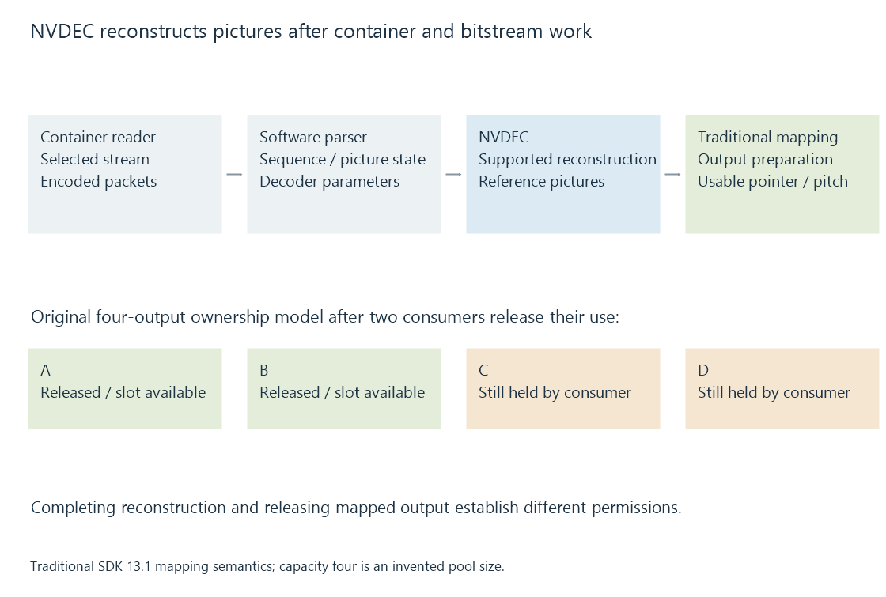

NVIDIA NVDEC
NVDEC is NVIDIA’s dedicated video-decoding engine, exposed through a decoder API that reconstructs supported encoded streams and makes decoded surfaces available to later processing.
NVDEC is NVIDIA's dedicated video-decoding engine. Its supported path reconstructs compressed video and supplies decoded picture data for processing, presentation or encoding.
The NVDECODE API is the software interface to that role. Its surrounding parser, memory and device work explains what happens before and after the hardware decode.
Demuxing, parsing and decoding are separate responsibilities
A container reader finds the selected encoded stream. A bitstream parser identifies the picture information and sequence configuration needed by decoding. The decoder reconstructs pictures from those inputs.
NVIDIA's supplied parser is a software component; an application can use an appropriate other parser. A supported NVDEC operation does not parse every media container automatically.

An Emby conversion can therefore perform CPU-side container and stream work while NVDEC carries out the selected picture reconstruction.
Query the selected encoded configuration
The decoder API exposes hardware capability queries. Relevant conditions include codec, bit depth, chroma format and dimensions, along with the requirements documented for the selected path.
A positive query for one format does not answer the target encoder query. Decoded HEVC pictures can later be encoded as H.264, but those are different device operations.
The hardware generation and exact device matter to supported configurations. This article describes the engine/interface relationship rather than assigning one codec matrix to all NVIDIA products.
Decoded and mapped output surfaces have different roles
NVDEC maintains decoded-picture storage used for reconstruction and references. The application obtains a usable output representation through the relevant API path.
In the documented traditional path, cuvidMapVideoFrame() waits for the relevant decoding, prepares the configured output format and returns an output device pointer and pitch. The documentation describes processing and a copy to an output surface in that mapping path.
Thus “map” should not automatically be read as “nothing moved or changed.” It is an API operation with specified output semantics. SDK 13.1 also documents other input/output interoperability paths with their own constraints.
Consumers keep storage in use
After mapping, a consumer can process the output picture or pass a suitable representation to another stage. cuvidUnmapVideoFrame() releases the mapped output for reuse under the API's lifecycle.
An original four-surface model illustrates the resource effect:
| Event | Mapped outputs still in use |
|---|---|
| Four outputs mapped and retained | 4 |
| Next output requested without release | No unused slot under this model |
| Consumer completes two and releases them | 2 |
| Two available slots can be reused | 2 slots available |
The pool size is an invented model, not an NVDEC default. Its lesson is ownership: finishing reconstruction does not mean every consumer has finished with the storage.
Decode-reference storage has an additional lifetime. An earlier picture can still be needed to reconstruct later pictures even after presentation has moved on.
Queue placement affects host-side progress
Mapping in the traditional path can block while the relevant decode completes. Calling it on the same host thread that submits further decoding can prevent that thread from supplying more work during the wait.
NVIDIA documents producer/consumer coordination as one way to separate those responsibilities. The design must still preserve the picture's reference and output lifetimes.
See Also
- NVDEC and CUVID API names
- NVIDIA CUDA in media processing
- NVIDIA NVENC
- Hardware decoding and software decoding
- The hardware decode-filter-encode pipeline